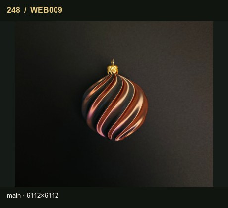
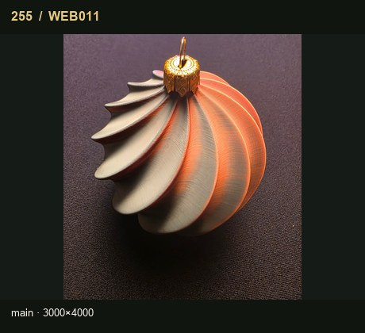
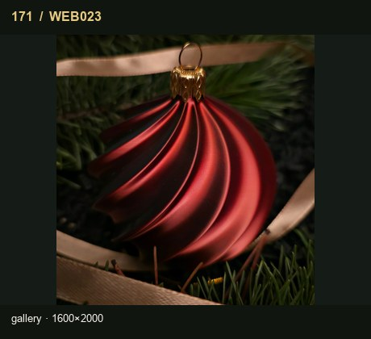
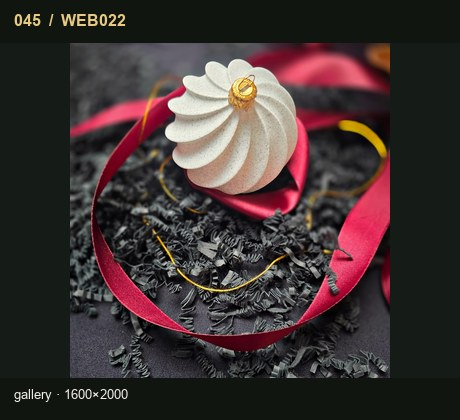
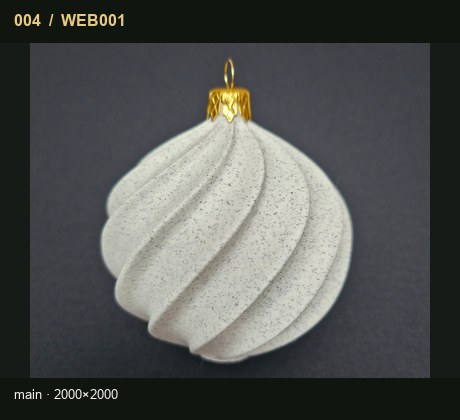
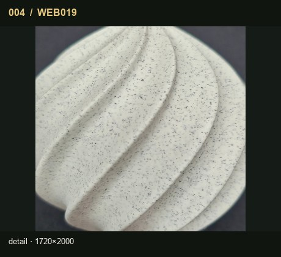
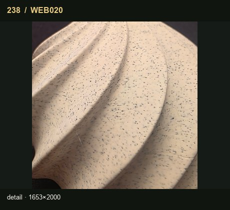
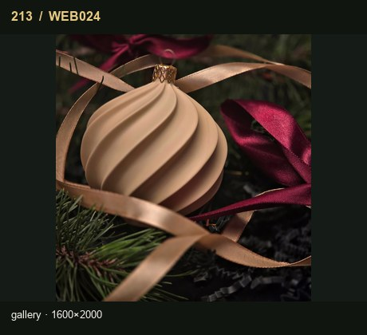

PREVIEW / DO AKCEPTACJIVASE / full-soft · PF-W26-VASE
VASE
Pełna kula o miękkim, spiralnym rytmie.
Źródło główne: WEB009. Kolor z fotografii jest wyłącznie kandydatem wizualnym.
CzerwonyBiałyBiały nakrapiany (Marble)Czarno-czerwony (Black / Red)Cappuccino
- CzerwonyFotografia proponowana
- BiałyFotografia proponowana
- Biały nakrapiany (Marble)Fotografia proponowana
- Czarno-czerwony (Black / Red)Fotografia proponowana
- CappuccinoFotografia proponowana
Galeria / detale / lifestyle






